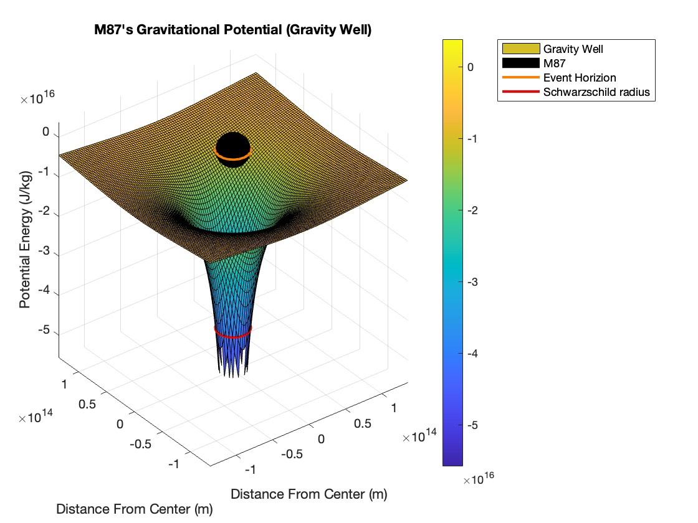
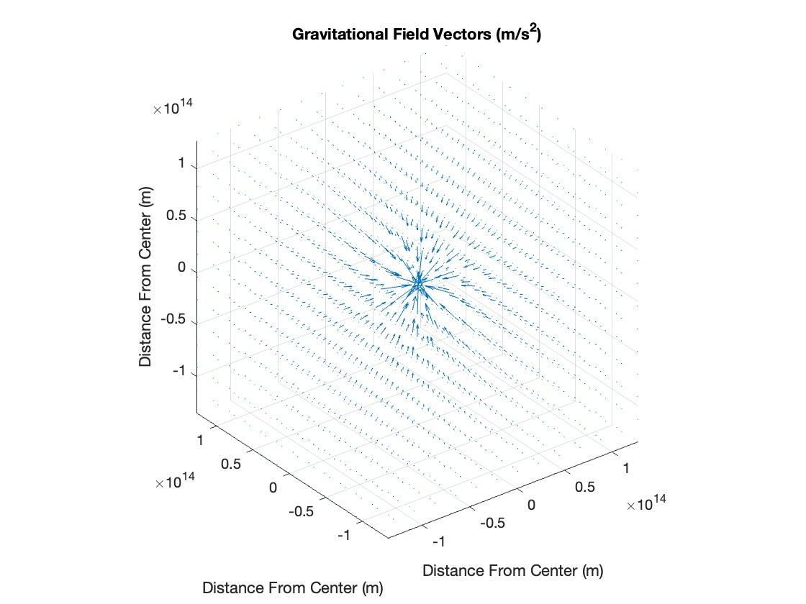
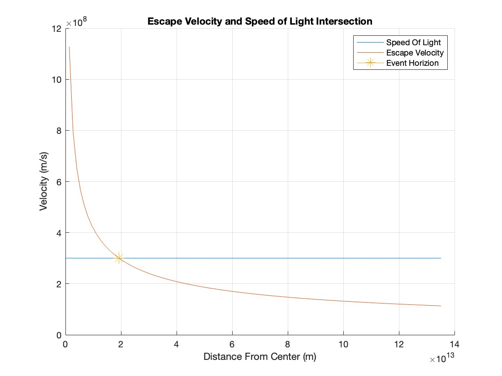
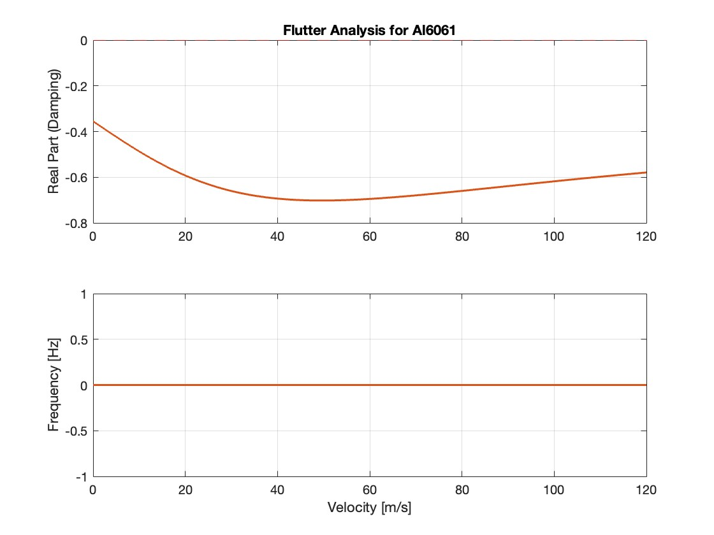
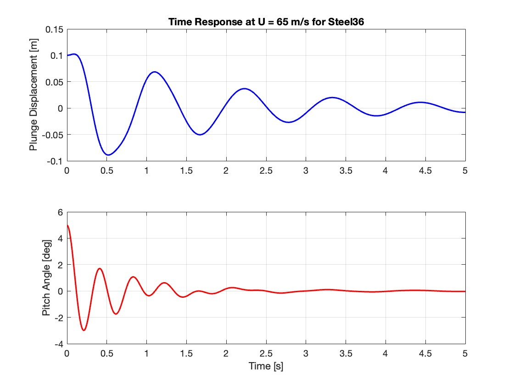
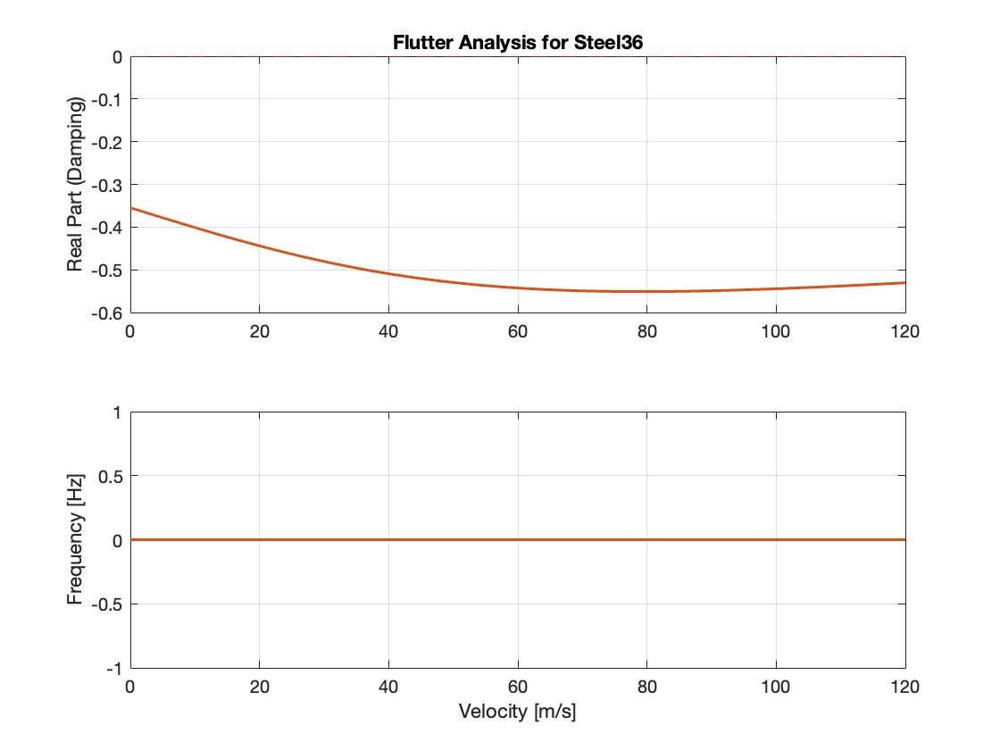

Project 03 / 03 · 2024 — 2025
Research
in motion.
Computational work on gravitational fields, escape velocity, and aeroelastic flutter. I use MATLAB and numerical methods to connect governing equations with physical behavior that another person can inspect.

Visualizing gravity beyond the textbook case.
For this project, I modeled M87* as a point mass using Newtonian gravity and built the visualization in MATLAB. The scalar potential, V = −GM/r, describes the energy landscape; taking its negative gradient gives the three-dimensional acceleration vector field. I also used line integrals to connect field strength with work per unit mass and plotted the radius where Newtonian escape velocity reaches the speed of light. The Schwarzschild radius provides a useful boundary, but it also marks where the simplified model becomes unreliable. The result is an intuitive computational model with a clear next step: adding relativistic corrections or simulating particle and light trajectories near the event horizon.


Making coupled motion legible.
I used a two-degree-of-freedom typical-section model to represent plunge, h, and pitch, α, for a wing scaled to a Cessna 172. The governing mass–spring–damper equations were converted into first-order state-space form so MATLAB could compare the effects of mass, stiffness, damping, and airspeed across Aluminum 6061, birch, Steel 36, and tungsten. From 0–120 m/s, every material retained negative damping and none reached a critical flutter speed. At 65 m/s, each case showed a small initial oscillation that decayed back to zero, indicating stable behavior under the selected assumptions. The study also makes the limitations clear: the model is numerical and idealized, so future work should explore higher speeds, lower damping, different mass distributions, and possible static divergence.




Good computation should help someone else see the idea.
The final step was presentation: choosing plots that make the model’s behavior understandable, explaining the assumptions, and showing where the mathematics becomes useful engineering evidence.
Ask about the work ↗